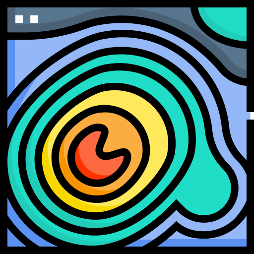

Autentique no GEE
Clique em "Authenticate on GEE", insira o ID do seu projeto Google Cloud e conclua a autenticação.

EasyDEMSelecione seu AOI. Veja quais dos 32 datasets cobrem a região. Escolha, baixe, visualize no QGIS.
Um fluxo de três etapas para sair do mapa ao DEM carregado no QGIS, sem ferramentas externas.
Clique em "Authenticate on GEE", insira o ID do seu projeto Google Cloud e conclua a autenticação.
Escolha a camada de polígonos que define sua área de interesse. Os datasets disponíveis para a região carregam automaticamente.
Selecione o dataset desejado e clique em "Download DEM". O raster é baixado e adicionado ao projeto com visualização pronta.
Five steps to set up Google Earth Engine and authenticate in the EasyDEM plugin.
Sign up for free at earthengine.google.com. GEE is free for non-commercial research, education, and nonprofit use.
→ Go to Earth EngineCreate a new project and link it to your GEE account.
→ Google Cloud ConsoleIn Cloud Console, search for "Earth Engine API" and enable it. This allows the plugin to communicate with GEE.
→ Enable APIGoogle requires you to declare your use case (research, education, commercial, etc.).
→ GEE ConfigurationOpen EasyDEM in QGIS, click "Authenticate on GEE", and enter your Cloud project ID. The plugin will guide you through OAuth confirmation.
Catálogo completo de 32 datasets globais e regionais de fontes consolidadas, com resoluções de 0,5m a 1800m. A disponibilidade é verificada automaticamente para sua AOI.
| Dataset | Resolução | Cobertura | Provedor |
|---|---|---|---|
| Netherlands AHN2 0.5m (Interpolated) | 0.5m | Netherlands | AHN / Rijkswaterstaat |
| Netherlands AHN2 0.5m (Non-interpolated) | 0.5m | Netherlands | AHN / Rijkswaterstaat |
| Netherlands AHN2 0.5m (Raw Samples) | 0.5m | Netherlands | AHN / Rijkswaterstaat |
| Netherlands AHN3 0.5m | 0.5m | Netherlands | AHN / Rijkswaterstaat |
| Netherlands AHN4 0.5m | 0.5m | Netherlands | AHN / Rijkswaterstaat |
| USGS 3DEP 1m | 1m | USA (partial) | USGS |
| NEON DEM | 1m | USA (NEON sites) | NSF NEON |
| England 1m Terrain (DTM) | 1m | England (99%) | Environment Agency (UK) |
| France RGE ALTI 1m | 1m | Metropolitan France | IGN France |
| ArcticDEM Mosaic V4.1 (2m) | 2m | Arctic (50–90°N) | University of Minnesota PGC / NSF |
| ArcticDEM Strips V3 (2m) | 2m | Arctic (50–90°N) | University of Minnesota PGC / NSF |
| REMA Strips v1 (2m) | 2m | Antarctica (S of 60°S) | University of Minnesota PGC / NSF |
| Australia 5m DEM | 5m | Australia | Geoscience Australia |
| REMA Mosaic v1.1 (8m) | 8m | Antarctica (S of 60°S) | University of Minnesota PGC / NSF |
| REMA Strips v1 (8m) | 8m | Antarctica (S of 60°S) | University of Minnesota PGC / NSF |
| USGS 3DEP 10m | 10m | USA (all states) | USGS |
| Canadian Digital Elevation Model (CDEM) | 23m | Canada | Natural Resources Canada |
| Copernicus GLO-30 | 30m | Global | ESA / Copernicus |
| NASADEM | 30m | Global (60°N to 56°S) | NASA / USGS |
| SRTM GL1 v003 | 30m | Global (60°N to 56°S) | NASA / USGS |
| ASTER GDEM v3 | 30m | Global (83°N to 83°S) | NASA / METI (JAXA) |
| ALOS AW3D30 v4.1 | 30m | Global (82°N to 82°S) | JAXA |
| Greenland GIMP DEM | 30m | Greenland | Ohio State University / NASA |
| Australia DEM-S (Smoothed) | 30m | Australia | Geoscience Australia |
| Australia DEM-H (Hydrologically Enforced) | 30m | Australia | Geoscience Australia |
| GLOBathy Global Lakes Bathymetry | 30m | Global (1.4M lakes) | GLOBathy / sat-io |
| MERIT DEM v1.0.3 | 90m | Global (90°N to 60°S) | University of Tokyo |
| CGIAR SRTM v4 | 90m | Global (60°N to 56°S) | CGIAR-CSI |
| GMTED2010 | 250m | Global (84°N to 56°S) | USGS / NGA |
| GTOPO30 | 1000m | Global | USGS EROS |
| CryoSat-2 Antarctica DEM | 1000m | Antarctica (S of 60°S) | ESA CryoSat-2 / CPOM |
| ETOPO1 | 1800m | Global (land + ocean) | NOAA NGDC |
Tecnologia e inteligência de campo trabalhando juntas para apoiar operações práticas.
Fale com a FARM sobre soluções comerciais exclusivas e personalizadas